JEE Main 2024 (Session 2), 9 Apr Shift 2: worked solutions for review
Questions and options are NTA’s own images; the green option is NTA’s final key. Every solution below was written by Claude
and checked against NTA’s final key. It is not NTA’s solution. Please mark anything unclear or wrong.
Q1 · Mathematics · MCQ · ID 68019114604
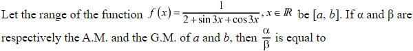
(1)
Hint 1: What is the range of sin 3x + cos 3x?
Hint 2: It is [−√2, √2], so f runs from 1/(2 + √2) to 1/(2 − √2).
What this tests: Range; AM and GM
1. a = 1/(2 + √2), b = 1/(2 − √2): a + b = 2, ab = 1/2.
2. α = 1, β = 1/√2.
3. α/β = √2.
Answer: (2)
If this felt hard: Revise Trigonometric Functions.
Claude’s answer: 2 · NTA final key: 2 · agrees · Answer recomputed with SymPy (tools/verify_pyq_solutions.py)
Q2 · Mathematics · MCQ · ID 68019114605
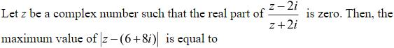
(1) 
(3) 
(4) 
Hint 1: Re((z − 2i)/(z + 2i)) = 0 describes a circle. Which one?
Hint 2: It is |z| = 2 (excluding z = −2i).
What this tests: Loci in the complex plane
1. Farthest point of |z| = 2 from 6 + 8i: distance 10 + 2.
2. That point (−6/5, −8/5) is allowed.
3. Maximum = 12.
Answer: (3)
If this felt hard: Revise Complex Numbers.
Claude’s answer: 3 · NTA final key: 3 · agrees · Answer recomputed with SymPy (tools/verify_pyq_solutions.py)
Q3 · Mathematics · MCQ · ID 68019114606
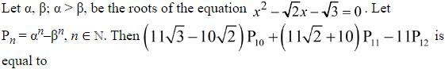
Hint 1: Each root satisfies x2 = √2 x + √3. Multiply by xn.
Hint 2: Pn+2 = √2 Pn+1 + √3 Pn.
What this tests: Recurrence for power sums
1. 11P12 = 11√2 P11 + 11√3 P10.
2. Expression = 10P11 − 10√2 P10 = 10√3 P9.
Answer: (3)
If this felt hard: Revise Quadratic Equations.
Claude’s answer: 3 · NTA final key: 3 · agrees · Answer recomputed with SymPy (tools/verify_pyq_solutions.py)
Q4 · Mathematics · MCQ · ID 68019114607
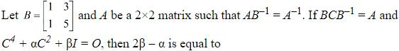
(1) 
(2) 
(3) 
(4) 
Hint 1: AB−1 = A−1 gives A2 = B. What is C2?
Hint 2: C = B−1AB, so C2 = B−1A2B = B.
What this tests: Matrix algebra and Cayley–Hamilton
1. C4 = B2. Cayley–Hamilton: B2 − 6B + 2I = 0.
2. α = −6, β = 2: 2β − α = 10.
Answer: (3)
If this felt hard: Revise Matrices.
Claude’s answer: 3 · NTA final key: 3 · agrees · Answer recomputed with SymPy (tools/verify_pyq_solutions.py)
Q5 · Mathematics · MCQ · ID 68019114608
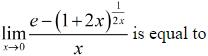
(1)
(2) 
Hint 1: Expand ln(1 + 2x)/(2x) for small x.
Hint 2: (1 + 2x)1/(2x) = e1 − x + … ≈ e(1 − x).
What this tests: Limits with e
1. e − e(1 − x) = ex.
2. Limit = e.
Answer: (1)
If this felt hard: Revise Limits.
Claude’s answer: 1 · NTA final key: 1 · agrees · Answer recomputed with SymPy (tools/verify_pyq_solutions.py)
Q6 · Mathematics · MCQ · ID 68019114609
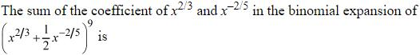
Hint 1: General term power of x: 2(9 − r)/3 − 2r/5.
Hint 2: x2/3: r = 5. x−2/5: r = 6.
What this tests: Binomial theorem
1. C(9,5)/25 = 63/16; C(9,6)/26 = 21/16.
2. Sum = 21/4.
Answer: (1)
If this felt hard: Revise the general term.
Claude’s answer: 1 · NTA final key: 1 · agrees · Answer recomputed with SymPy (tools/verify_pyq_solutions.py)
Q7 · Mathematics · MCQ · ID 68019114610
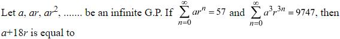
(2) 
Hint 1: Cube the first sum and divide by the second.
Hint 2: (1 − r3)/(1 − r)3 = 573/9747 = 19.
What this tests: Infinite GP
1. 6r2 − 13r + 6 = 0, r = 2/3 (|r| < 1).
2. a = 57/3 = 19; a + 18r = 31.
Answer: (2)
If this felt hard: Revise Sequences and Series.
Claude’s answer: 2 · NTA final key: 2 · agrees · Answer recomputed with SymPy (tools/verify_pyq_solutions.py)
Q8 · Mathematics · MCQ · ID 68019114611
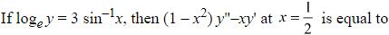
Hint 1: y = e3 sin^{−1x}. Find y' and then y''.
Hint 2: √(1 − x2) y' = 3y; differentiate again.
What this tests: Second derivatives
1. (1 − x2)y'' − xy' = 9y.
2. At x = 1/2: 9e3π/6 = 9eπ/2.
Answer: (1)
If this felt hard: Revise Continuity and Differentiability.
Claude’s answer: 1 · NTA final key: 1 · agrees · Answer recomputed with SymPy (tools/verify_pyq_solutions.py)
Q9 · Mathematics · MCQ · ID 68019114612
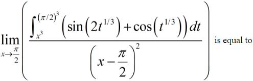
Hint 1: 0/0 form: use L'Hôpital with the Leibniz rule. It is needed twice.
Hint 2: Numerator derivative = −3x2(sin 2x + cos x), which is 0 at π/2.
What this tests: Limits with integrals
1. Differentiate again at π/2: −3x2(2cos 2x − sin x) = −3(π2/4)(−3) = 9π2/4.
2. Denominator's second derivative is 2.
3. Limit = 9π2/8.
Answer: (3)
If this felt hard: Revise L'Hôpital-style limits and Leibniz rule.
Claude’s answer: 3 · NTA final key: 3 · agrees · Answer recomputed with SymPy (tools/verify_pyq_solutions.py)
Q10 · Mathematics · MCQ · ID 68019114613
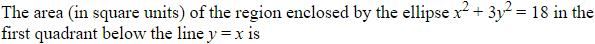
Hint 1: Use parametric form x = √18 cos t, y = √6 sin t.
Hint 2: Area swept from the centre = (ab/2)t.
What this tests: Area of an elliptic sector
1. y = x at tan t = √3, t = π/3.
2. Area = (√18√6/2)(π/3) = √3π.
Answer: (1)
If this felt hard: Revise Application of Integrals.
Claude’s answer: 1 · NTA final key: 1 · agrees · Answer recomputed with SymPy (tools/verify_pyq_solutions.py)
Q11 · Mathematics · MCQ · ID 68019114614
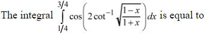
(1) 
(2) 
(3) 
(4) 
Hint 1: Put x = cos 2θ.
Hint 2: √((1 − x)/(1 + x)) = tan θ, and cot−1(tan θ) = π/2 − θ.
What this tests: Inverse trig simplification
1. cos(π − 2θ) = −x.
2. ∫1/43/4 −x dx = −1/4.
Answer: (2)
If this felt hard: Revise Inverse Trigonometric Functions.
Claude’s answer: 2 · NTA final key: 2 · agrees · Answer recomputed with SymPy (tools/verify_pyq_solutions.py)
Q12 · Mathematics · MCQ · ID 68019114615
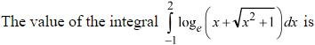
Hint 1: Integrate by parts.
Hint 2: ∫ ln(x + √(x2 + 1)) dx = x ln(x + √(x2 + 1)) − √(x2 + 1).
What this tests: Integration by parts
1. Value = 2ln(2 + √5) − √5 + ln(√2 − 1) + √2.
2. = √2 − √5 + ln((9 + 4√5)/(1 + √2)).
Answer: (1)
If this felt hard: Revise Integrals.
Claude’s answer: 1 · NTA final key: 1 · agrees · Answer recomputed with SymPy (tools/verify_pyq_solutions.py)
Q13 · Mathematics · MCQ · ID 68019114616
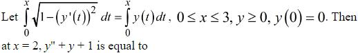
(1) 
(4) 
Hint 1: Differentiate both sides with respect to x.
Hint 2: √(1 − y'2) = y, so y' = ±√(1 − y2).
What this tests: Differential equations from integral equations
1. With y(0) = 0: y = sin x (y ≥ 0 on [0, 3]).
2. y'' + y = 0, so y'' + y + 1 = 1.
Answer: (1)
If this felt hard: Revise Differential Equations.
Claude’s answer: 1 · NTA final key: 1 · agrees · Theory question: not computable, needs a teacher’s review
Note: Teacher look: y = sin x on [0, π/2] then y = 1 also satisfies the equation (giving 2). The key takes y = sin x throughout.
Q14 · Mathematics · MCQ · ID 68019114617
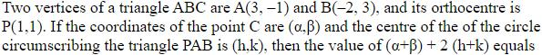
(1) 
(2) 
(4)
Hint 1: Orthocentre: AP ⊥ BC and BP ⊥ AC.
Hint 2: (α + 2, β − 3)·(−2, 2) = 0 and (α − 3, β + 1)·(3, −2) = 0.
What this tests: Orthocentre and circumcentre
1. C = (21, 26): α + β = 47.
2. Circumcentre of PAB: (−19/2, −23/2), h + k = −21.
3. 47 − 42 = 5.
Answer: (1)
If this felt hard: Revise Straight Lines.
Claude’s answer: 1 · NTA final key: 1 · agrees · Answer recomputed with SymPy (tools/verify_pyq_solutions.py)
Q15 · Mathematics · MCQ · ID 68019114618
(1)
(2)
(3)
(4)
Hint 1: Find the ellipse's eccentricity and focal distance.
Hint 2: eE = 1/2, focal distance 5 from (1, 1).
What this tests: Ellipse and hyperbola
1. Hyperbola: e = 2, ae = 5, a = 5/2, b2 = 75/4.
2. α = 5, β = 5√3.
3. 3(25) + 2(75) = 225.
Answer: (4)
If this felt hard: Revise Conic Sections.
Claude’s answer: 4 · NTA final key: 4 · agrees · Answer recomputed with SymPy (tools/verify_pyq_solutions.py)
Q16 · Mathematics · MCQ · ID 68019114619
(1) 
(2) 
(3) 
(4) 
Hint 1: Move from the point along the given direction until you hit L.
Hint 2: Direction (2, 1, 2); L: (1 + t, 2 + t, 3 + 2t).
What this tests: Distance along a line
1. Meeting at s = −1, t = 2/3.
2. Distance = |s| × |(2,1,2)| = 3.
Answer: (4)
If this felt hard: Revise Three Dimensional Geometry.
Claude’s answer: 4 · NTA final key: 4 · agrees · Answer recomputed with SymPy (tools/verify_pyq_solutions.py)
Q17 · Mathematics · MCQ · ID 68019114620
(1)
(2)
(3) 
(4) 
Hint 1: a × (r − b) = 0 means r = b + λa.
Hint 2: a·r = 0 gives λ = −(a·b)/|a|2.
What this tests: Vector equations; triangle inequality
1. λ = −1/2; r = (3/2, 0, 1/2), |r| = √10/2: I incorrect.
2. cos 2A + cos 2B + cos 2C ≥ −3/2: II correct.
Answer: (4)
If this felt hard: Revise Vector Algebra and Trigonometry.
Claude’s answer: 4 · NTA final key: 4 · agrees · Answer recomputed with SymPy (tools/verify_pyq_solutions.py)
Q18 · Mathematics · MCQ · ID 68019114621
(1)
(2) 
(3) 
(4) 
Hint 1: Parallelogram with diagonals p, q has area |p × q|/2.
Hint 2: (1, α, 2) × (−1, β, 0) = (−2β, −2, α + β).
What this tests: Area from diagonals
1. 4β2 + 4 + (α + β)2 = 21 with αβ = −6.
2. (3, −2) and (−3, 2).
3. 9 + 4 + 6 = 19.
Answer: (2)
If this felt hard: Revise Vector Algebra.
Claude’s answer: 2 · NTA final key: 2 · agrees · Answer recomputed with SymPy (tools/verify_pyq_solutions.py)
Q19 · Mathematics · MCQ · ID 68019114622
(1) 
(2) 
(3) 
(4) 
Hint 1: Seven observations: c, c, 2c, …, 6c.
Hint 2: Mean = 22c/7; Σx2 = 92c2.
What this tests: Variance
1. Var = 92c2/7 − (22c/7)2 = 160c2/49 = 160.
2. c = 7.
Answer: (2)
If this felt hard: Revise Statistics.
Claude’s answer: 2 · NTA final key: 2 · agrees · Answer recomputed with SymPy (tools/verify_pyq_solutions.py)
Q20 · Mathematics · MCQ · ID 68019114623
(1)
(2)
(3)
(4)
Hint 1: You need three strictly increasing numbers.
Hint 2: Choose 3 different faces; only one order works.
What this tests: Probability
1. C(6,3)/216 = 20/216 = 5/54.
Answer: (1)
If this felt hard: Revise Probability.
Claude’s answer: 1 · NTA final key: 1 · agrees · Answer recomputed by script (tools/verify_pyq_solutions.py)
Q21 · Mathematics · Numerical · ID 68019114624
Hint 1: List natural solutions of 2x + 3y = 23.
Hint 2: (10,1), (7,3), (4,5), (1,7).
What this tests: Counting functions
1. |A| = |B| = 4.
2. One-one functions: 4! = 24.
Answer: 24
If this felt hard: Revise Relations and Functions.
Claude’s answer: 24 · NTA final key: 24 · agrees · Answer recomputed by script (tools/verify_pyq_solutions.py)
Q22 · Mathematics · Numerical · ID 68019114625
Hint 1: Solve by Cramer's rule.
Hint 2: x = 25m/(2m + 15), y = (2m − 60)/(2m + 15).
What this tests: Linear systems with a parameter
1. x < 0, y < 0 only for −15/2 < m < 0.
2. 8∫(2m + 15) dm over that interval = 8 × 225/4 = 450.
Answer: 450
If this felt hard: Revise Determinants.
Claude’s answer: 450 · NTA final key: 450 · agrees · Answer recomputed with SymPy (tools/verify_pyq_solutions.py)
Q23 · Mathematics · Numerical · ID 68019114626
Hint 1: Fix the hundreds digit a, count (b, c) with b + c = 14 − a.
Hint 2: Pairs with sum s (0..9 each): s + 1 if s ≤ 9, 19 − s otherwise.
What this tests: Counting digits
1. 6 + 7 + 8 + 9 + 10 + 9 + 8 + 7 + 6 = 70.
Answer: 70
If this felt hard: Revise Permutations and Combinations.
Claude’s answer: 70 · NTA final key: 70 · agrees · Answer recomputed by script (tools/verify_pyq_solutions.py)
Q24 · Mathematics · Numerical · ID 68019114627
Hint 1: 1/(2k(2k − 1)) = 1/(2k − 1) − 1/(2k).
Hint 2: The second bracket = 1/1013 + … + 1/2024.
What this tests: Telescoping harmonic sums
1. With α = 1011 the first bracket is 1/1012 + … + 1/2023.
2. Difference = 1/1012 − 1/2024 = 1/2024.
Answer: 1011
If this felt hard: Revise Sequences and Series.
Claude’s answer: 1011 · NTA final key: 1011 · agrees · Answer recomputed with SymPy (tools/verify_pyq_solutions.py)
Q25 · Mathematics · Numerical · ID 68019114628
Hint 1: f'(x) = 4(p2 − 6p + 8) sin 4x + 2(2 − p). When is it never zero?
Hint 2: Need 2|p − 2| > 4|(p − 2)(p − 4)|, with p ≠ 2.
What this tests: Critical points
1. 1 > 2|p − 4|: 7/2 < p < 9/2.
2. 16ab = 16 × 63/4 = 252.
Answer: 252
If this felt hard: Revise Application of Derivatives.
Claude’s answer: 252 · NTA final key: 252 · agrees · Answer recomputed with SymPy (tools/verify_pyq_solutions.py)
Note: p = 2 makes f constant (every point critical), so it is excluded.
Q26 · Mathematics · Numerical · ID 68019114629
Hint 1: Solve f' = 3f + α.
Hint 2: f = Ce3x − α/3.
What this tests: Linear differential equations
1. Limit at −∞: −α/3 = 7. f(0) = 1: C = −6.
2. f(−ln 3) = −6/27 + 7 = 61/9.
3. 9f = 61.
Answer: 61
If this felt hard: Revise Differential Equations.
Claude’s answer: 61 · NTA final key: 61 · agrees · Answer recomputed with SymPy (tools/verify_pyq_solutions.py)
Q27 · Mathematics · Numerical · ID 68019114630
Hint 1: Chord of the circle with midpoint (h, k): hx + ky = h2 + k2.
Hint 2: Through (α, 0) with k2 = 8h: α = h + 8 (h ≠ 0); the x-axis (midpoint O) gives a third chord.
What this tests: Chords with a given midpoint
1. Midpoint inside the circle: h2 + 8h < 4, so 0 < h < 2√5 − 4.
2. α ∈ (8, 4 + 2√5).
3. (2q − p)2 = (4√5)2 = 80.
Answer: 80
If this felt hard: Revise Circles and Conic Sections.
Claude’s answer: 80 · NTA final key: 80 · agrees · Answer recomputed with SymPy (tools/verify_pyq_solutions.py)
Q28 · Mathematics · Numerical · ID 68019114631
Hint 1: Use parameters A(at12, 2at1) etc. with a = 3/2.
Hint 2: CD = a|(t3 − t1)(t3 − t2)|, AM·BN = 4a2|(t1 − t3)(t2 − t3)|.
What this tests: Parametric form of a parabola
1. Ratio = 4a = 6.
2. Square = 36.
Answer: 36
If this felt hard: Revise Conic Sections.
Claude’s answer: 36 · NTA final key: 36 · agrees · Answer recomputed with SymPy (tools/verify_pyq_solutions.py)
Q29 · Mathematics · Numerical · ID 68019114632
Hint 1: Find the foot of the perpendicular first.
Hint 2: (1 + 3t, 2t, 2 + 4t): t = 1.
What this tests: Image in a line
1. Foot (4, 2, 6); image (2, 3, 7).
2. 4 + 9 + 49 = 62.
Answer: 62
If this felt hard: Revise Three Dimensional Geometry.
Claude’s answer: 62 · NTA final key: 62 · agrees · Answer recomputed with SymPy (tools/verify_pyq_solutions.py)
Q30 · Mathematics · Numerical · ID 68019114633
Hint 1: sin−1x + cos−1x = π/2.
Hint 2: The equation becomes π + cos−1x = 2π/5.
What this tests: Inverse trigonometric identities
1. cos−1x = −3π/5, impossible.
2. 0 solutions.
Answer: 0
If this felt hard: Revise Inverse Trigonometric Functions.
Claude’s answer: 0 · NTA final key: 0 · agrees · Answer recomputed with SymPy (tools/verify_pyq_solutions.py)
Q31 · Physics · MCQ · ID 68019114634
(1)
(2)
(3)
(4)
Hint 1: h = λ√(2mE).
Hint 2: Multiply the dimensions of length, √mass and √energy.
What this tests: Dimensions
1. [h] = L × M1/2 × (ML2T−2)1/2 = ML2T−1.
Answer: (2)
If this felt hard: Revise Units and Measurements.
Claude’s answer: 2 · NTA final key: 2 · agrees · Theory question: not computable, needs a teacher’s review
Q32 · Physics · MCQ · ID 68019114635
(1)
(2)
(3)
(4)
Hint 1: Each car stops in u2/(2a).
Hint 2: 202/4 = 100 m each.
What this tests: Stopping distance
1. 300 − 200 = 100 m.
Answer: (2)
If this felt hard: Revise Motion in a Straight Line.
Claude’s answer: 2 · NTA final key: 2 · agrees · Answer recomputed by script (tools/verify_pyq_solutions.py)
Q33 · Physics · MCQ · ID 68019114636
(1)
(2)
(3)
(4)
Hint 1: Momentum is conserved from zero.
Hint 2: m1v1 = m2v2.
What this tests: Conservation of momentum
1. Masses 2 : 1, speeds 1 : 2, opposite directions.
Answer: (2)
If this felt hard: Revise Laws of Motion.
Claude’s answer: 2 · NTA final key: 2 · agrees · Theory question: not computable, needs a teacher’s review
Q34 · Physics · MCQ · ID 68019114637
(1)
(2)
(3)
(4)
Hint 1: Balance forces at the midpoint.
Hint 2: T1cos 45° = T2 = 10 N; T1sin 45° = F.
What this tests: Equilibrium
1. F = 10 N.
Answer: (1)
If this felt hard: Revise Laws of Motion.
Claude’s answer: 1 · NTA final key: 1 · agrees · Answer recomputed by script (tools/verify_pyq_solutions.py)
Q35 · Physics · MCQ · ID 68019114638
(1)
(2) 
(3)
(4) 
Hint 1: 10.2 eV takes the electron from n = 1 to which level?
Hint 2: E2 − E1 = 10.2 eV.
What this tests: Spectral lines
1. Only n = 2 → 1 is possible: 1 line.
Answer: (1)
If this felt hard: Revise Atoms.
Claude’s answer: 1 · NTA final key: 1 · agrees · Theory question: not computable, needs a teacher’s review
Q36 · Physics · MCQ · ID 68019114639
(1)
(2)
(3)
(4)
Hint 1: Net work = WAB + WBC + WCA.
Hint 2: On AB, P = RT/V3 with RT = 8 × 300 = 2400; BC is at constant 10 N/m2; CA is isochoric.
What this tests: Work in a cyclic process
1. WAB = ∫24 2400/V3 dV = 1200(1/4 − 1/16) = 225 J.
2. WBC = 10 × (2 − 4) = −20 J; WCA = 0.
3. Net = 205 J.
Answer: (3)
If this felt hard: Revise Thermodynamics.
Claude’s answer: 3 · NTA final key: 3 · agrees · Answer recomputed with SymPy (tools/verify_pyq_solutions.py)
Note: Teacher look: the graph's pressures (20 at A) do not match PV^{3} = RT at 300 K; the key uses the equation for W_{AB}.
Q37 · Physics · MCQ · ID 68019114640
(1)
(2)
(3)
(4)
Hint 1: Energy per kg: fusion releases 26.7 MeV per 4 H atoms; fission 200 MeV per 235 u.
Hint 2: Ratio = (26.7/4)/(200/235).
What this tests: Fusion vs fission energy
1. Ratio ≈ 7.8, nearest option 7.62.
Answer: (1)
If this felt hard: Revise Nuclei.
Claude’s answer: 1 · NTA final key: 1 · agrees · Answer recomputed by script (tools/verify_pyq_solutions.py)
Note: Exact ratio with these data is 7.84; the key 7.62 is the nearest option.
Q38 · Physics · MCQ · ID 68019114641
(1)
(2)
(3)
(4)
Hint 1: E = −GMm/(2r) with GM = gR2.
Hint 2: ΔE = (gR2m/2)(1/(2R) − 1/r).
What this tests: Orbital energy
1. (104R/2)(1/2 − R/r) = 104R/6.
2. R/r = 1/6, r = 6R.
Answer: (4)
If this felt hard: Revise Gravitation.
Claude’s answer: 4 · NTA final key: 4 · agrees · Answer recomputed with SymPy (tools/verify_pyq_solutions.py)
Q39 · Physics · MCQ · ID 68019114642
(1)
(2)
(3)
(4)
Hint 1: ΔP = 4T/r.
Hint 2: Thrice the pressure means one-third the radius.
What this tests: Soap bubbles
1. V ∝ r3: 1 : 27.
Answer: (3)
If this felt hard: Revise Mechanical Properties of Fluids.
Claude’s answer: 3 · NTA final key: 3 · agrees · Answer recomputed by script (tools/verify_pyq_solutions.py)
Q40 · Physics · MCQ · ID 68019114643
(1)
(2)
(3)
(4)
Hint 1: √(2gh) must equal the terminal velocity in water.
Hint 2: vt = 2r2ρg/(9η) (key ignores water's buoyancy).
What this tests: Terminal velocity
1. vt = 2 × 10−8 × 105 × 9.8/(9 × 9.8 × 10−6) = 222 m/s.
2. h = v2/(2g) ≈ 2518 m.
Answer: (4)
If this felt hard: Revise Mechanical Properties of Fluids.
Claude’s answer: 4 · NTA final key: 4 · agrees · Answer recomputed by script (tools/verify_pyq_solutions.py)
Note: Teacher look: including buoyancy (ρ − σ) gives 220 m/s and h ≈ 2469 m, not an option; the key neglects buoyancy.
Q41 · Physics · MCQ · ID 68019114644
(1)
(2)
(3)
(4)
Hint 1: Average KE ∝ absolute temperature.
Hint 2: −78 °C = 195 K.
What this tests: Kinetic theory
1. 2 × 195 = 390 K = 117 °C.
Answer: (1)
If this felt hard: Revise Kinetic Theory.
Claude’s answer: 1 · NTA final key: 1 · agrees · Answer recomputed by script (tools/verify_pyq_solutions.py)
Q42 · Physics · MCQ · ID 68019114645
(1)
(2)
(3)
(4)
Hint 1: Gauss's law: count only charges inside S.
Hint 2: Inside: +5q, q, −2q.
What this tests: Gauss's law
1. Flux = 4q/ε0.
Answer: (1)
If this felt hard: Revise Electric Charges and Fields.
Claude’s answer: 1 · NTA final key: 1 · agrees · Answer recomputed by script (tools/verify_pyq_solutions.py)
Q43 · Physics · MCQ · ID 68019114646
(1)
(2)
(3)
(4)
Hint 1: Use symmetry: which nodes of the diamond are at the same potential?
Hint 2: Top, centre and bottom nodes are equipotential.
What this tests: Symmetry in networks
1. Left node to the middle nodes: three R in parallel = R/3; same on the right.
2. Total = R + R/3 + R/3 + R = 8R/3.
Answer: (4)
If this felt hard: Revise Current Electricity.
Claude’s answer: 4 · NTA final key: 4 · agrees · Answer recomputed by script (tools/verify_pyq_solutions.py)
Q44 · Physics · MCQ · ID 68019114647
(1)
(2)
(3) 
(4)
Hint 1: r = mv/(qB) = √(2mK)/(qB).
Hint 2: Same q and K: r ∝ √m.
What this tests: Charged particles in a magnetic field
1. rd : rp = √2 : 1.
Answer: (1)
If this felt hard: Revise Moving Charges and Magnetism.
Claude’s answer: 1 · NTA final key: 1 · agrees · Answer recomputed by script (tools/verify_pyq_solutions.py)
Q45 · Physics · MCQ · ID 68019114648
(1)
(2)
(3)
(4)
Hint 1: Where is the loop after 10 s?
Hint 2: It moves 20 cm; the loop is 15 cm wide.
What this tests: Motional emf
1. The loop is fully inside the field (5 to 20 cm): flux constant.
2. emf = 0.
Answer: (1)
If this felt hard: Revise Electromagnetic Induction.
Claude’s answer: 1 · NTA final key: 1 · agrees · Theory question: not computable, needs a teacher’s review
Q46 · Physics · MCQ · ID 68019114649
(1) 
(2) 
(3)
(4)
Hint 1: Parallel in, parallel out: the foci must coincide.
Hint 2: d = f1 + f2.
What this tests: Lens combinations
1. d = 10 + 15 = 25 cm.
Answer: (3)
If this felt hard: Revise Ray Optics.
Claude’s answer: 3 · NTA final key: 3 · agrees · Answer recomputed by script (tools/verify_pyq_solutions.py)
Q47 · Physics · MCQ · ID 68019114650
(1)
(2)
(3)
(4)
Hint 1: Kmax = hν − φ.
Hint 2: Einstein's equation for the fastest electrons.
What this tests: Photoelectric effect
1. 4.13 − 3.13 = 1 eV.
Answer: (1)
If this felt hard: Revise Dual Nature.
Claude’s answer: 1 · NTA final key: 1 · agrees · Answer recomputed by script (tools/verify_pyq_solutions.py)
Q48 · Physics · MCQ · ID 68019114651
(1)
(2)
(3)
(4)
Hint 1: The NOR gate gets AB and ĀB̄.
Hint 2: E = (AB + ĀB̄)̄ = A ⊕ B.
What this tests: Logic gates
1. X = 1, Y = 1 (XOR).
Answer: (4)
If this felt hard: Revise Semiconductor Electronics.
Claude’s answer: 4 · NTA final key: 4 · agrees · Theory question: not computable, needs a teacher’s review
Q49 · Physics · MCQ · ID 68019114652
(1)
(2)
(3)
(4)
Hint 1: Sharp current rise in reverse bias at a fixed voltage: which device?
Hint 2: Reverse breakdown at constant voltage.
What this tests: Zener diode
1. Zener diode, used as a voltage regulator.
Answer: (2)
If this felt hard: Revise Semiconductor Electronics.
Claude’s answer: 2 · NTA final key: 2 · agrees · Theory question: not computable, needs a teacher’s review
Q50 · Physics · MCQ · ID 68019114653
(1)
(2)
(3)
(4)
Hint 1: E0 = cB0; E, B and the direction of travel are mutually perpendicular.
Hint 2: Phase kx + ωt means travel along −x.
What this tests: EM waves
1. E0 = 3 × 108 × 3.5 × 10−7 = 105 V/m.
2. B along y, travel along −x: E along z.
Answer: (3)
If this felt hard: Revise Electromagnetic Waves.
Claude’s answer: 3 · NTA final key: 3 · agrees · Theory question: not computable, needs a teacher’s review
Q51 · Physics · Numerical · ID 68019114654
Hint 1: W = ∫ F dx.
Hint 2: Antiderivative x3 + x2 − 5x.
What this tests: Work by a variable force
1. (64 + 16 − 20) − (8 + 4 − 10) = 58 J.
Answer: 58
If this felt hard: Revise Work, Energy and Power.
Claude’s answer: 58 · NTA final key: 58 · agrees · Answer recomputed with SymPy (tools/verify_pyq_solutions.py)
Q52 · Physics · Numerical · ID 68019114655
Hint 1: A plate adds an extra optical path (μ − 1)t.
Hint 2: (μ − 1)t = 4λ.
What this tests: Fringe shift
1. t = 4 × 500 nm/0.5 = 4 μm.
Answer: 4
If this felt hard: Revise Wave Optics.
Claude’s answer: 4 · NTA final key: 4 · agrees · Answer recomputed by script (tools/verify_pyq_solutions.py)
Q53 · Physics · Numerical · ID 68019114656
Hint 1: Z = √(R2 + XC2).
Hint 2: Z = 8 Ω; Vrms = 8 V.
What this tests: AC power
1. Irms = 1 A.
2. P = I2R = 4 W.
Answer: 4
If this felt hard: Revise Alternating Current.
Claude’s answer: 4 · NTA final key: 4 · agrees · Answer recomputed by script (tools/verify_pyq_solutions.py)
Q54 · Physics · Numerical · ID 68019114657
Hint 1: Pole strength stays; the distance between poles changes.
Hint 2: Length L = πr becomes a semicircle with ends 2r apart.
What this tests: Magnetic moment of a bent magnet
1. M' = M × 2/π = 44 × 7/11 = 28 A m2.
Answer: 28
If this felt hard: Revise Magnetism and Matter.
Claude’s answer: 28 · NTA final key: 28 · agrees · Answer recomputed by script (tools/verify_pyq_solutions.py)
Q55 · Physics · Numerical · ID 68019114658
Hint 1: R = R0(1 + αΔT), with R0 taken at 27 °C.
Hint 2: ΔT = 12/(50 × 2.4 × 10−4).
What this tests: Temperature coefficient
1. ΔT = 1000 °C.
2. T = 1027 °C.
Answer: 1027
If this felt hard: Revise Current Electricity.
Claude’s answer: 1027 · NTA final key: 1027 · agrees · Answer recomputed by script (tools/verify_pyq_solutions.py)
Note: Uses 27 °C as the reference, as the key does.
Q56 · Physics · Numerical · ID 68019114659
Hint 1: Only the faces perpendicular to x have flux.
Hint 2: Faces at x = 2 and x = 4, area 4 m2.
What this tests: Electric flux
1. Flux = (2 × 4 − 2 × 2) × 4 = 16 N m2/C.
Answer: 16
If this felt hard: Revise Electric Charges and Fields.
Claude’s answer: 16 · NTA final key: 16 · agrees · Answer recomputed by script (tools/verify_pyq_solutions.py)
Note: Figure: cube from x = 2 to 4.
Q57 · Physics · Numerical · ID 68019114660
Hint 1: ω = √(k/m).
Hint 2: ω = 10 rad/s.
What this tests: SHM period
1. T = 2π/10 = 22/35 s.
Answer: 22
If this felt hard: Revise Oscillations.
Claude’s answer: 22 · NTA final key: 22 · agrees · Answer recomputed by script (tools/verify_pyq_solutions.py)
Q58 · Physics · Numerical · ID 68019114661
Hint 1: Rolling disc: a = g sin θ/(1 + 1/2).
Hint 2: t ∝ 1/√a.
What this tests: Rolling on an incline
1. troll = √(3/2) t.
2. α = 3.
Answer: 3
If this felt hard: Revise Rotational Motion.
Claude’s answer: 3 · NTA final key: 3 · agrees · Answer recomputed by script (tools/verify_pyq_solutions.py)
Q59 · Physics · Numerical · ID 68019114662
Hint 1: Write (A + B)·A = 0 and |A + B| = B/2.
Hint 2: A2 + AB cos θ = 0 and A2 + B2 + 2AB cos θ = B2/4.
What this tests: Vector addition
1. A2 = 3B2/4.
2. cos θ = −A/B = −√3/2: θ = 150°.
Answer: 150
If this felt hard: Revise Motion in a Plane.
Claude’s answer: 150 · NTA final key: 150 · agrees · Answer recomputed with SymPy (tools/verify_pyq_solutions.py)
Q60 · Physics · Numerical · ID 68019114663
Hint 1: The voltmeter reads across R in parallel with 10 kΩ.
Hint 2: Slope V/I = 2 kΩ.
What this tests: Parallel resistors
1. 1/R = 1/2000 − 1/10000.
2. R = 2500 Ω.
Answer: 2500
If this felt hard: Revise Current Electricity.
Claude’s answer: 2500 · NTA final key: 2500 · agrees · Answer recomputed by script (tools/verify_pyq_solutions.py)
Q61 · Chemistry · MCQ · ID 68019114664
(1)
(2)
(3)
(4)
Hint 1: Recall the SI definition of the candela.
Hint 2: Frequency 540 × 1012 Hz, radiant intensity 1/683 W/sr.
What this tests: SI units
1. A = 540, B = 683.
Answer: (3)
If this felt hard: Revise Units and Measurements.
Claude’s answer: 3 · NTA final key: 3 · agrees · Theory question: not computable, needs a teacher’s review
Q62 · Chemistry · MCQ · ID 68019114665
(1)
(2)
(3)
(4)
Hint 1: Compare geometries: T-shaped, pyramidal, trigonal planar.
Hint 2: Lone pairs squeeze bond angles.
What this tests: Bond angles
1. ClF3 (~87.5°) < PF3 (~97°) < BF3 (120°).
Answer: (3)
If this felt hard: Revise Chemical Bonding.
Claude’s answer: 3 · NTA final key: 3 · agrees · Theory question: not computable, needs a teacher’s review
Q63 · Chemistry · MCQ · ID 68019114666
(1)
(2)
(3)
(4)
Hint 1: Ksp = [A2+][B−]2.
Hint 2: Square the B− concentration because there are two per formula.
What this tests: Solubility product
1. 1.2 × 10−4 × (0.24 × 10−3)2 = 6.91 × 10−12.
Answer: (1)
If this felt hard: Revise Equilibrium.
Claude’s answer: 1 · NTA final key: 1 · agrees · Answer recomputed by script (tools/verify_pyq_solutions.py)
Q64 · Chemistry · MCQ · ID 68019114667
(1) 
(2)
(3) 
(4)
Hint 1: Recall NCERT's batteries and their features.
Hint 2: Leclanché = dry cell; mercury cell powers hearing aids.
What this tests: Batteries
1. Leclanché: Zn → Zn2+ at anode (IV). Ni–Cd: rechargeable (III). Fuel cell: combustion energy (I). Mercury cell: no ions in solution, hearing aids (II).
Answer: (2)
If this felt hard: Revise Electrochemistry.
Claude’s answer: 2 · NTA final key: 2 · agrees · Theory question: not computable, needs a teacher’s review
Q65 · Chemistry · MCQ · ID 68019114668
(1)
(2)
(3)
(4)
Hint 1: Use Ostwald's law with α = Λm/Λ°m.
Hint 2: Ka = Cα2/(1 − α).
What this tests: Ostwald's dilution law
1. KaΛ°(Λ° − Λm) = CΛm2.
2. Λm2C − KaΛ°2 + KaΛmΛ° = 0.
Answer: (3)
If this felt hard: Revise Electrochemistry.
Claude’s answer: 3 · NTA final key: 3 · agrees · Theory question: not computable, needs a teacher’s review
Q66 · Chemistry · MCQ · ID 68019114669
(1)
(2)
(3)
(4)
Hint 1: Es (Z = 99) is 13 electrons after Rn's 86 + 7s2.
Hint 2: After Rn (86), 13 more electrons: 7s2 and 5f.
What this tests: Actinoid configurations
1. [Rn]5f117s2.
Answer: (2)
If this felt hard: Revise The d- and f-Block Elements.
Claude’s answer: 2 · NTA final key: 2 · agrees · Theory question: not computable, needs a teacher’s review
Q67 · Chemistry · MCQ · ID 68019114670
(1) 
(2) 
(3) 
(4) 
Hint 1: Match by number of electrons.
Hint 2: Count total electrons: N 7, S 16, Br 35, Kr 36.
What this tests: Electronic configurations
1. N (III), S (II), Br (I), Kr (IV).
Answer: (3)
If this felt hard: Revise Structure of Atom.
Claude’s answer: 3 · NTA final key: 3 · agrees · Theory question: not computable, needs a teacher’s review
Q68 · Chemistry · MCQ · ID 68019114671
(1)
(2) 
(3) 
(4) 
Hint 1: Recall the irregular group 13 trends (NCERT table).
Hint 2: Ga is unusually small and low-melting; Tl has a high IE.
What this tests: Group 13 trends
1. Melting point B > Al > Tl > In > Ga (IV); ionic radius Tl > In > Ga > Al > B (I); IE B > Tl > Al ≈ Ga > In (II); atomic radius Tl > In > Al > Ga > B (III).
Answer: (1)
If this felt hard: Revise The p-Block Elements.
Claude’s answer: 1 · NTA final key: 1 · agrees · Theory question: not computable, needs a teacher’s review
Q69 · Chemistry · MCQ · ID 68019114672
(1) 
(2)
(3) 
(4) 
Hint 1: Compare d-block and p-block trends in oxidation states.
Hint 2: Cu is below H in the electrochemical series.
What this tests: Oxidation-state trends
1. Both statements true.
Answer: (1)
If this felt hard: Revise The d- and f-Block Elements.
Claude’s answer: 1 · NTA final key: 1 · agrees · Theory question: not computable, needs a teacher’s review
Q70 · Chemistry · MCQ · ID 68019114673
(1)
(2)
(3)
(4)
Hint 1: EDTA is hexadentate.
Hint 2: EDTA4− binds through 2 N and 4 O.
What this tests: Chelating ligands
1. Six donor atoms: octahedral.
Answer: (3)
If this felt hard: Revise Coordination Compounds.
Claude’s answer: 3 · NTA final key: 3 · agrees · Theory question: not computable, needs a teacher’s review
Q71 · Chemistry · MCQ · ID 68019114674
(1) 
(2) 
(3) 
(4)
Hint 1: Find each metal's d-count and ligand strength.
Hint 2: CN−, CO and NH3 (with Co3+) are strong field; F− is weak field.
What this tests: VBT of complexes
1. [Ni(CN)4]2−: dsp2 (III); Ni(CO)4: sp3 (I); [Co(NH3)6]3+: d2sp3 (IV); [CoF6]3−: sp3d2 (II).
Answer: (3)
If this felt hard: Revise Coordination Compounds.
Claude’s answer: 3 · NTA final key: 3 · agrees · Theory question: not computable, needs a teacher’s review
Q72 · Chemistry · MCQ · ID 68019114675
(1) 
(2) 
(3) 
(4) 
Hint 1: What does each reagent detect, and what is seen?
Hint 2: Br2 water decolourises; CAN gives red with alcohols; FeCl3 colours phenols; 2,4-DNP precipitates carbonyls.
What this tests: Functional group tests
1. Br2 water: colour disappears (II); CAN: red (III); FeCl3: blue/green/violet/red (IV); 2,4-DNP: orange precipitate (I).
Answer: (1)
If this felt hard: Revise practical organic chemistry.
Claude’s answer: 1 · NTA final key: 1 · agrees · Theory question: not computable, needs a teacher’s review
Q73 · Chemistry · MCQ · ID 68019114676
(1)
(2)
(3)
(4)
Hint 1: Neutral structures are most stable; negative charge on O is better than on C.
Hint 2: Count formal charges: zero charges best; then negative charge on the more electronegative atom.
What this tests: Resonance stability
1. III > II > I.
Answer: (1)
If this felt hard: Revise Organic Chemistry: Some Basic Principles.
Claude’s answer: 1 · NTA final key: 1 · agrees · Theory question: not computable, needs a teacher’s review
Q74 · Chemistry · MCQ · ID 68019114677
(1)
(2)
(3)
(4)
Hint 1: Triple bonds are shorter and stronger than double bonds.
Hint 2: Compare bond order 3 with bond order 2.
What this tests: Structure of alkynes
1. 'C–C bond in ethyne is weaker than in ethene' is false.
Answer: (2)
If this felt hard: Revise Hydrocarbons.
Claude’s answer: 2 · NTA final key: 2 · agrees · Theory question: not computable, needs a teacher’s review
Q75 · Chemistry · MCQ · ID 68019114678
(1)
(2)
(3)
(4)
Hint 1: KCN gives CN−, a good nucleophile.
Hint 2: Substitution at the carbon bearing Br.
What this tests: Nucleophilic substitution
1. P: Br replaced by CN at the same carbon.
Answer: (2)
If this felt hard: Revise Haloalkanes.
Claude’s answer: 2 · NTA final key: 2 · agrees · Theory question: not computable, needs a teacher’s review
Note: Teacher look: neighbouring OCH_{3}/phenyl participation could in principle give rearranged products; the key takes direct substitution.
Q76 · Chemistry · MCQ · ID 68019114679
(1) 
(2) 
(3) 
(4) 
Hint 1: Count chiral centres and C=C bonds that show cis–trans isomerism.
Hint 2: Left C=C: yes. Right C=C (carbons each with two different groups): yes. CH(Br): chiral.
What this tests: Stereoisomer count
1. 3 stereo elements, no symmetry.
2. 23 = 8.
Answer: (1)
If this felt hard: Revise Organic Chemistry: Some Basic Principles.
Claude’s answer: 1 · NTA final key: 1 · agrees · Theory question: not computable, needs a teacher’s review
Q77 · Chemistry · MCQ · ID 68019114680
(1) 
(2) 
(3)
(4) 
Hint 1: Tollens' reagent is reduced by aldehydes (and formic acid).
Hint 2: Aldehydes and HCOOH reduce Ag+; ketones do not.
What this tests: Tollens' test
1. Formic acid, formaldehyde, benzaldehyde: yes. Acetone: no.
Answer: (4)
If this felt hard: Revise Aldehydes and Ketones.
Claude’s answer: 4 · NTA final key: 4 · agrees · Theory question: not computable, needs a teacher’s review
Q78 · Chemistry · MCQ · ID 68019114681
(1)
(2)
(3)
(4)
Hint 1: Which compound becomes a methyl ketone in aqueous KOH?
Hint 2: A gem-dichloride hydrolyses to a ketone.
What this tests: Iodoform test
1. CH3CH2CCl2CH3 → butan-2-one, which gives iodoform.
Answer: (3)
If this felt hard: Revise Aldehydes and Ketones.
Claude’s answer: 3 · NTA final key: 3 · agrees · Theory question: not computable, needs a teacher’s review
Q79 · Chemistry · MCQ · ID 68019114682
(1)
(2)
(3)
(4)
Hint 1: Excess Grignard: what happens to an ester and to a nitrile?
Hint 2: Ester → tertiary alcohol; nitrile → ketone after hydrolysis.
What this tests: Grignard reactions
1. Product: 4-acetyl with C(OH)(CH3)2 para.
Answer: (4)
If this felt hard: Revise Aldehydes, Ketones and Carboxylic Acids.
Claude’s answer: 4 · NTA final key: 4 · agrees · Theory question: not computable, needs a teacher’s review
Q80 · Chemistry · MCQ · ID 68019114683
(1)
(2)
(3)
(4)
Hint 1: Why is glucose so soluble in water?
Hint 2: Five OH groups form H-bonds.
What this tests: Glucose
1. Statement 2 (solubility due to the aldehyde group) is incorrect.
Answer: (2)
If this felt hard: Revise Biomolecules.
Claude’s answer: 2 · NTA final key: 2 · agrees · Theory question: not computable, needs a teacher’s review
Q81 · Chemistry · Numerical · ID 68019114684
Hint 1: ΔxΔp ≥ h/(4π).
Hint 2: Δv = h/(4πmΔx).
What this tests: Uncertainty principle
1. Δv = 6.626 × 10−34/(4 × 3.14 × 9.1 × 10−31 × 10−15) = 5.8 × 1010 m/s.
2. = 58 × 109.
Answer: 58
If this felt hard: Revise Structure of Atom.
Claude’s answer: 58 · NTA final key: 58 · agrees · Answer recomputed by script (tools/verify_pyq_solutions.py)
Q82 · Chemistry · Numerical · ID 68019114685
Hint 1: Fill the MOs: O2 has 2 electrons in π*.
Hint 2: O2+ has one less, O2− one more.
What this tests: MO theory
1. 2 + 1 + 3 = 6.
Answer: 6
If this felt hard: Revise Chemical Bonding.
Claude’s answer: 6 · NTA final key: 6 · agrees · Theory question: not computable, needs a teacher’s review
Q83 · Chemistry · Numerical · ID 68019114686
Hint 1: At the boiling point ΔG = 0.
Hint 2: T = ΔH/ΔS.
What this tests: Phase equilibrium
1. T = 30000/75 = 400 K.
Answer: 400
If this felt hard: Revise Thermodynamics.
Claude’s answer: 400 · NTA final key: 400 · agrees · Answer recomputed by script (tools/verify_pyq_solutions.py)
Q84 · Chemistry · Numerical · ID 68019114687
Hint 1: Partial pressures: pi = xiPi°.
Hint 2: Equimolar liquid: pB = 40, pT = 12 Torr.
What this tests: Raoult's law
1. yT = 12/52 = 0.23.
2. = 23 × 10−2.
Answer: 23
If this felt hard: Revise Solutions.
Claude’s answer: 23 · NTA final key: 23 · agrees · Answer recomputed by script (tools/verify_pyq_solutions.py)
Q85 · Chemistry · Numerical · ID 68019114688
Hint 1: Total pressure: P0 + 2x. At the end it is 3P0.
Hint 2: P0 = 100 torr; at 23 s, x = 50.
What this tests: First-order gas reactions
1. Half of A gone in 23 s: t1/2 = 23 s.
2. k = 0.693/23 = 3 × 10−2 s−1.
Answer: 3
If this felt hard: Revise Chemical Kinetics.
Claude’s answer: 3 · NTA final key: 3 · agrees · Answer recomputed by script (tools/verify_pyq_solutions.py)
Q86 · Chemistry · Numerical · ID 68019114689
Hint 1: Highest second IE: removing an electron from a stable configuration.
Hint 2: Cr+ is 3d5.
What this tests: Ionisation enthalpies; magnetic moment
1. M = Cr; Cr+ has 5 unpaired: √35 = 5.92 ≈ 6.
Answer: 6
If this felt hard: Revise The d- and f-Block Elements.
Claude’s answer: 6 · NTA final key: 6 · agrees · Theory question: not computable, needs a teacher’s review
Q87 · Chemistry · Numerical · ID 68019114690
Hint 1: Group IV black sulphide that gives a yellow complex with KNO2/CH3COOH.
Hint 2: Co: K3[Co(NO2)6].
What this tests: Cobalt test
1. Co3+ d6 with NO2− (strong field): low spin.
2. 0 BM.
Answer: 0
If this felt hard: Revise salt analysis.
Claude’s answer: 0 · NTA final key: 0 · agrees · Theory question: not computable, needs a teacher’s review
Q88 · Chemistry · Numerical · ID 68019114691
Hint 1: Measure from the base line (1 cm) to the solvent front (9 cm).
Hint 2: Solvent travels 8 cm.
What this tests: TLC Rf values
1. Rf(A) = 4/8, Rf(B) = 6/8.
2. Ratio 1.5 = 15 × 10−1.
Answer: 15
If this felt hard: Revise purification methods.
Claude’s answer: 15 · NTA final key: 15 · agrees · Answer recomputed by script (tools/verify_pyq_solutions.py)
Note: Figure reading: base line 1 cm above the bottom, front 1 cm below the 10 cm top.
Q89 · Chemistry · Numerical · ID 68019114692
Hint 1: Fuming sulphuric acid = oleum.
Hint 2: H2S2O7.
What this tests: Oleum
1. 7 oxygen atoms.
Answer: 7
If this felt hard: Revise The p-Block Elements.
Claude’s answer: 7 · NTA final key: 7 · agrees · Theory question: not computable, needs a teacher’s review
Q90 · Chemistry · Numerical · ID 68019114693
Hint 1: Friedel–Crafts fails with strongly deactivated rings and with NH2 (it binds AlCl3).
Hint 2: Check each ring for NO2 groups or a free NH2.
What this tests: Friedel–Crafts limits
1. Nitrobenzene, aniline, m-nitroaniline, m-dinitrobenzene.
2. Count 4.
Answer: 4
If this felt hard: Revise Hydrocarbons and Amines.
Claude’s answer: 4 · NTA final key: 4 · agrees · Theory question: not computable, needs a teacher’s review